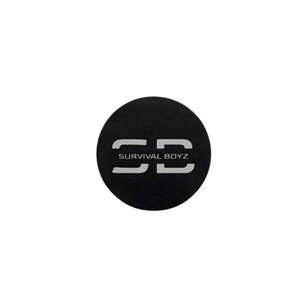

Trade Mark Journal No.2025/022 30 May 2025
UK00004203338 14 May 2025 (34)

- Class 34
- Electronic cigarette cartomizers; Smokeless cigarette vaporizer pipes; Electronic cigarette atomizers; Cigarette tobacco; Snus with tobacco; Oral vaporizers for smokers; Hookah tobacco; Smokeless tobacco; Menthol cigarettes; Shisha tobacco; Smoking tobacco; Inhalers for use as an alternative to tobacco cigarettes; Electronic cigarette liquid [e-liquid] comprised of flavorings in liquid form used to refill electronic cigarette cartridges; Electronic nicotine inhalation devices; Electronic cigarette liquid [e-liquid] comprised of propylene glycol; Roll-your-own tobacco; Electronic cigarette liquid [e-liquid] comprised of flavourings in liquid form used to refill electronic cigarette cartridges; Liquid nicotine solutions for use in electronic cigarettes; Liquid nicotine solutions for electronic cigarettes; Cigarettes, cigars, cigarillos and other ready-for-use smoking articles; Menthol pipe tobacco; Cigarettes; Tobacco; Cigars for use as an alternative to tobacco cigarettes; Humidifiers for tobacco; Vaporizers for smoking purposes; Electronic cigarette liquid [e-liquid] comprised of vegetable glycerin; Flavourings for tobacco; Mentholated tobacco; Tobacco tar for use in electronic cigarettes; Pipes for smoking mentholated tobacco substitutes; Electronic devices for the inhalation of nicotine containing aerosol; Cartridges for electronic cigarettes; Electric cigarettes [electronic cigarettes]; Snus without tobacco; Mouthpieces for cigarettes; Snus; Tobacco free oral nicotine pouches [not for medical use]; Tobacco and tobacco substitutes; Cigarette lighters; Smokers (Lighters for -); Lighters for smokers; Devices for extinguishing heated cigarettes, cigars and heated tobacco sticks; Smoking sets for electronic cigarettes; Flavored tobacco; Liquids for electronic cigarettes; Electronic cigarette cleaners; Tobacco products; Tobacco pouches; Pouches (Tobacco -); Liquid for electronic cigarettes; Chemical flavorings in liquid form used to refill electronic cigarette cartridges; Electronic cigarettes; Tobacco free cigarettes, other than for medical purposes; Refill cartridges for electronic cigarettes; Lighters for smokers [cigarette lighters] [not for automobiles]; Chemical flavourings in liquid form used to refill electronic cigarette cartridges; Devices for heating tobacco for the purpose of inhalation; Spittoons for tobacco users; Electronic cigarette cases; Cigarette tubes; Ashtrays for smokers; Replaceable cartridges for electronic cigarettes; Personal vaporisers and electronic cigarettes, and flavourings and solutions therefor; Portable cigarette ash pouches; Cigarettes containing tobacco substitutes; Tea for smoking as a tobacco substitute; Devices for extinguishing heated cigarettes and cigars as well as heated tobacco sticks; Pipe tobacco; Devices for heating tobacco substitutes for the purpose of inhalation; Hand-rolling tobacco; Hemp for smoking; Cigarette cases; Cases (Cigarette -); Cases for electronic cigarettes; Electronic cigarettes for use as an alternative to traditional cigarettes; Articles for use with tobacco; Liquid solutions for use in electronic cigarettes; Cigarette packets; Tobacco tins; Electronic smoking pipes; Cigar humidifiers; Tobacco and tobacco products (including substitutes); Snuff with tobacco; Flavorings, other than essential oils, for use in electronic cigarettes; Tobacco pipes; Pipes (Tobacco -); Manufactured tobacco; Tobacco containers and humidors; Cigarette ash receptacles; Chewing tobacco; Tobacco spittoons; Cartridges sold filled with chemical flavorings in liquid form for electronic cigarettes; Mouthpieces for cigarette holders; Cigarette holders (Mouthpieces for -); Flavourings, other than essential oils, for use in electronic cigarettes; Filters (Cigarette -); Cigarette filters; Tobacco filters; Filters for tobacco products; Tobacco pipe cleaners; Cartridges sold filled with chemical flavourings in liquid form for electronic cigarettes; Gas containers for cigarette lighters; Cigarette tips; Tips (Cigarette -); Tobacco cases; Tobacco substitutes; Tobacco powder; Cigar lighters; Cigarette paper; Cigarette papers; Wicks adapted for cigarette lighters; Electronic shisha pipes; Tobacco substitute; Flavorings, other than essential oils, for tobacco; Holders for electronic cigarettes; Tobacco products for the purpose of being heated; Electronic hookahs.
Mackay Project's LTD